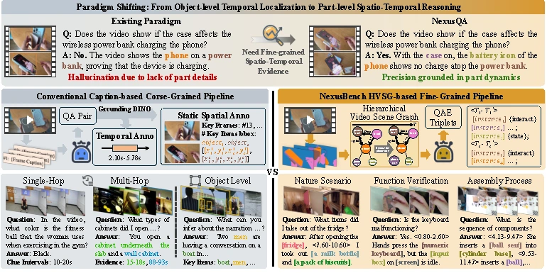

VIDEO UNDERSTANDINGNexusQA: Spatio-Temporal Interlacement Grounded VideoQA
Fine-grained spatio-temporal evidence and collaborative agents for grounded video reasoning.
Research overview
NexusBench uses hierarchical video scene graphs to evaluate whether answers rely on the right objects, parts, and moments. NexusScore examines evidence utilization, while the NexusQA baseline coordinates strategy and grounding agents to collect evidence and reason over it without additional training.